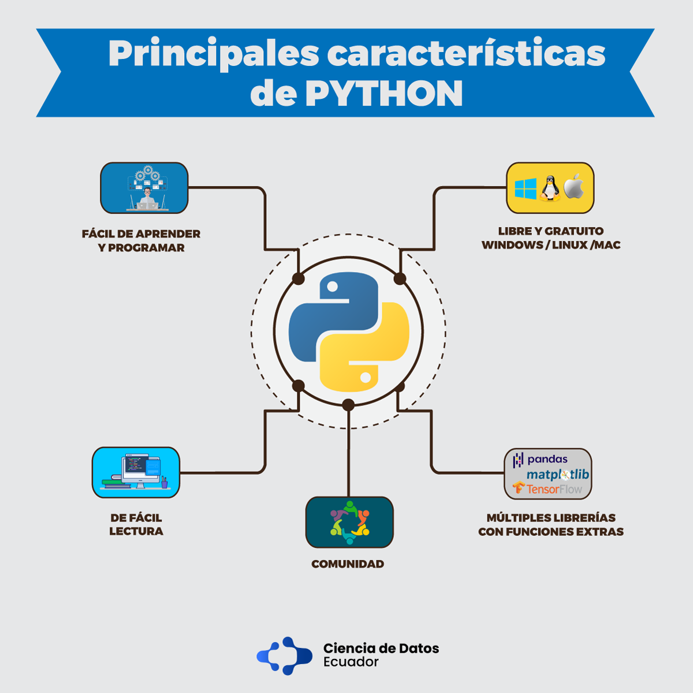

Características:
- Python es un lenguaje muy expresivo, es decir, los programas Python son muy compactos: un programa Python suele ser bastante más corto que su equivalente en lenguajes como C. (Python llega a ser considerado por muchos un lenguaje de programación de muy alto nivel).
- Python es muy legible. La sintaxis de Python es muy elegante y permite la escritura de programas cuya lectura resulta más fácil que si utilizáramos otros lenguajes de programación.
- Python ofrece un entorno interactivo que facilita la realización de pruebas y ayuda a despejar dudas acerca de ciertas características del lenguaje.
- El entorno de ejecución de Python detecta muchos de los errores de programación que escapan al control de los compiladores y proporciona información muy rica para detectarlos y corregirlos
- Python puede usarse como lenguaje imperativo procedimental o como lenguaje orientado a objetos.
- Posee un rico juego de estructuras de datos que se pueden manipular de modo sencillo.